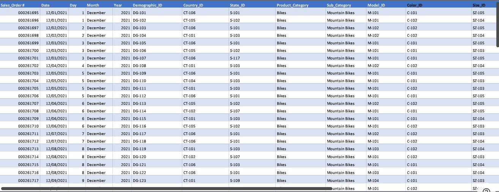
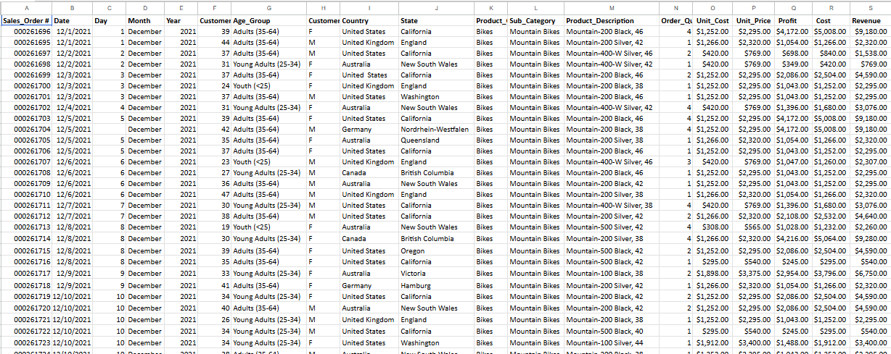
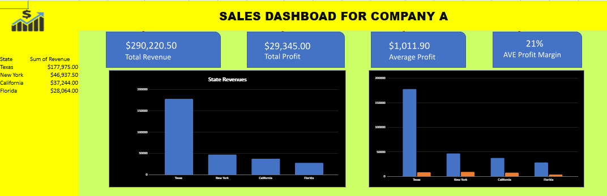
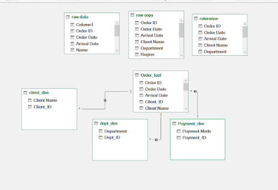

Midterm Lab Task 1: Learning essential data cleaning techniques using Microsoft Excel.
View Project
Midterm Task 2. Data Analysis using Pivot Table.
View Project
Midterm Lab Task 3: Data analysis and visualization using Pivot Tables.
View Project
Midterm Task 3. Data Prep and Cleaning and Modeling w Power Query.
View Project